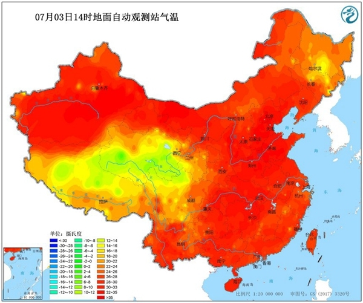

中国天气网讯 今天（3日），华北、黄淮多地出现高温天气，截至下午2点，北京、天津、郑州等地气温突破35℃。预报显示，今后三天（3-5日），这一带的高温天气将继续发酵，高温范围以及强度将在4日达到鼎盛，预计北京、天津、石家庄、济南等地明天的最高气温有望突破38℃，其中北京和石家庄的最高气温还有望创今年以来的新高。

今天，华北、黄淮一带的高温持续发酵，截至今天下午2点，陕西北部、山西西南部、河北南部、北京、天津、山东西部、河南北部最高气温已普遍超过35℃。大城市中，北京、天津、郑州均迎来高温日。
在阳光暴晒下，地表温度也逐渐走高。今天下午2点，华北黄淮大部地区的地表温度都在50℃以上，部分地区地表温度甚至超过60℃。其中，河北衡水地表温度高达68.3℃，天津站和北京站附近的地表温度分别高达66.6℃和66.5℃。
中国天气网气象分析师王伟跃介绍，明天（4日），华北、黄淮地区35℃以上的高温天气还将继续升级，并进入鼎盛阶段，高温强度和范围都将发展到最强。 明天，北京南部、天津大部、河北中部和南部、山东中部和西部、山西南部局地、河南北部、东北部分地区的最高气温都将达到或超过35℃。
不过，专家提醒，济南被雨水天气完美绕开，因此未来一周，当地的高温还会天天上岗。在此提醒当地居民注意防暑降温，防范持续高温带来的各种不利影响。（文/张慧 数据支持/王伟跃 胡啸 审核/刘文静 张方丽）